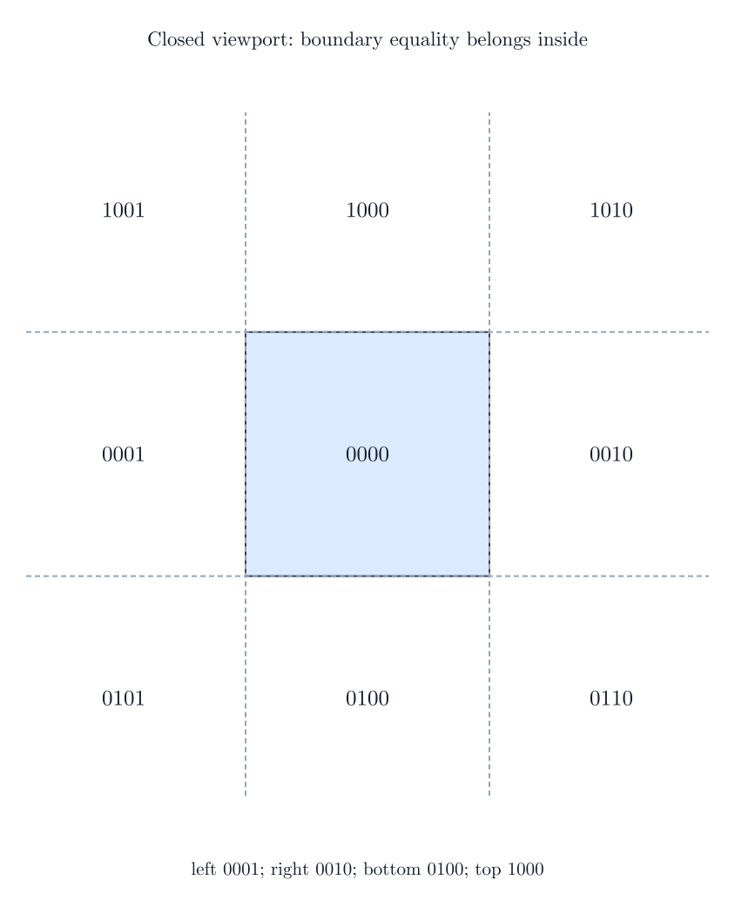
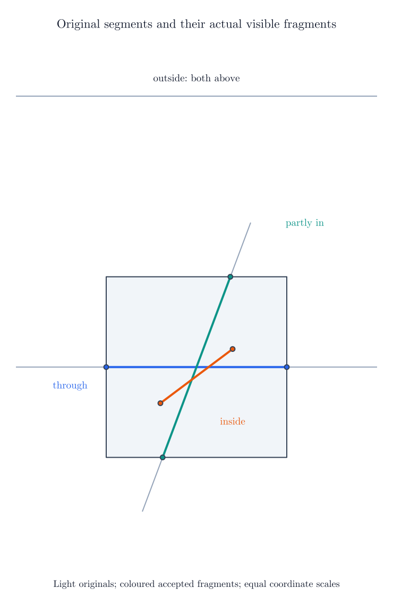
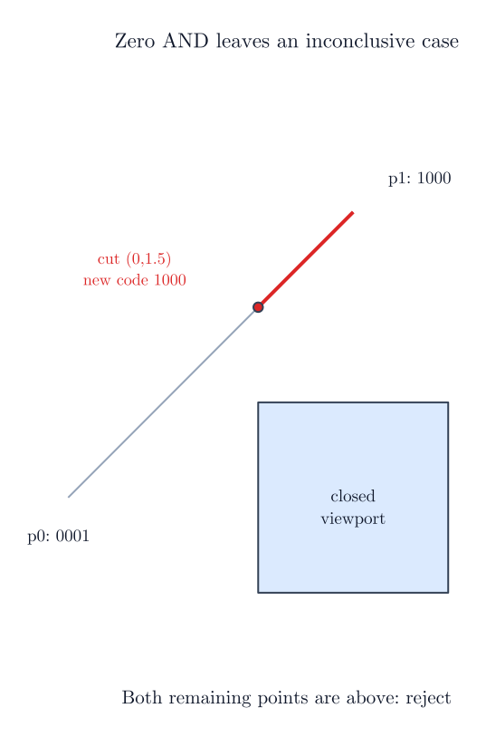
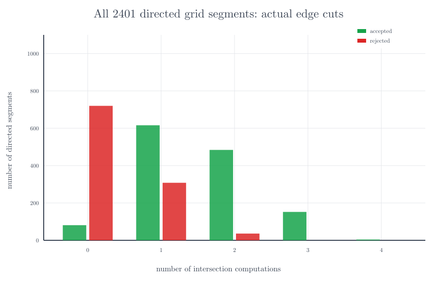

Cohen–Sutherland: Outcodes, Half-Planes and Real Decisions
Abstract
A renderer needs the portion of a directed line segment that lies in a closed rectangular viewport, or a decision that nothing is visible. Testing every boundary intersection wastes work when a segment is already inside or wholly outside one side. Cohen–Sutherland uses four-bit endpoint codes to resolve those cases first. We retain the original four segments, inspect actual native edge decisions and show a zero-AND pair that still misses the viewport. A complete small grid measures trivial and intersection paths. The checked core validates all inputs, retains closed-boundary contacts and uses widened supporting-line arithmetic; this remains floating geometry, not an exact predicate.
Nine regions and two decisive bit tests
Let the viewport be [xmin,xmax]×[ymin,ymax], with inclusive, ordered finite bounds. Give a point bit 1 when x<xmin, bit 2 when x>xmax, bit 4 when y<ymin and bit 8 when y>ymax. Equality is inside that half-plane. Combining these tests divides the plane into nine regions; opposite horizontal bits cannot both occur for an ordered rectangle, and neither can opposite vertical bits.
#include <dm/dm.hpp>
int main() {
std::filesystem::create_directories("build");
dm::graphics::Diagram d(28,950);
dm::graphics::DiagramStroke grid;grid.color={148,163,184};grid.dashed=true;
d.polygon({{0,0},{10,0},{10,10},{0,10}},{219,234,254});
for(double edge:{0.,10.}) {
d.path({{edge,-9},{edge,19}},grid);d.path({{-9,edge},{19,edge}},grid);
}
std::print("| region centre x | region centre y | actual four-bit outcode |\n| ---: | ---: | :--- |\n");
for(double y:{15.,5.,-5.})for(double x:{-5.,5.,15.}) {
const auto mask=dm::algorithms::cohen_sutherland_outcode(x,y,0,0,10,10);
const auto bits=std::format("{:04b}",unsigned(mask));
d.text({x,y},bits,25);
std::print("| {:.0f} | {:.0f} | {} |\n",x,y,bits);
}
d.text({5,22},"Closed viewport: boundary equality belongs inside",23)
.text({5,-12},"left 0001; right 0010; bottom 0100; top 1000",21)
.save_svg("build/cohen_outcodes.svg");
}| region centre x | region centre y | actual four-bit outcode |
|---|---|---|
| -5 | 15 | 1001 |
| 5 | 15 | 1000 |
| 15 | 15 | 1010 |
| -5 | 5 | 0001 |
| 5 | 5 | 0000 |
| 15 | 5 | 0010 |
| -5 | -5 | 0101 |
| 5 | -5 | 0100 |
| 15 | -5 | 0110 |

Write c0,c1 for the current endpoint codes. If (c0 OR c1)=0, both points are inside. A rectangle is convex, so every point between them is inside too: accept the current segment. If (c0 AND c1)≠0, both points violate the same closed half-plane. Every convex combination still violates it: reject. These mask tests avoid intersection arithmetic, but obtaining the codes still requires coordinate comparisons. A zero AND with nonzero OR is inconclusive.
The original four segments, with executed edge work
Use the original viewport [0,10]×[0,10] and the same directed inputs. The historical label “partly in” describes an oblique crossing: both of its original endpoints are outside. It enters at y=0 and leaves at y=10. In p(t)=(2,−3)+t(6,16), those parameters are 3/16 and 13/16, yielding (3.125,0) and (6.875,10).
The trace shares the executing kernel with cohen_sutherland_clip(). It records current endpoints/codes, the selected outside endpoint, the actual intersection and its new code. The first outside endpoint is chosen, with edge priority top, bottom, right, left. Each run ends with a separate accept or reject decision.
#include <dm/dm.hpp>
int main() {
std::filesystem::create_directories("build");
struct Segment {double x0,y0,x1,y1;std::string_view name;dm::graphics::RGB colour;};
const std::vector<Segment> input{{-5,5,15,5,"through",{37,99,235}},
{2,-3,8,13,"partly in",{13,148,136}},{3,3,7,6,"inside",{234,88,12}},
{-5,20,15,20,"outside",{220,38,38}}};
dm::graphics::Diagram d(34,1000);
d.polygon({{0,0},{10,0},{10,10},{0,10}},{241,245,249});
dm::graphics::DiagramStroke original;original.color={148,163,184};original.width=2;
std::print("| original name | visible | native clipped endpoints | edge cuts | decisions | outcode evaluations |\n| :--- | :--- | :--- | ---: | ---: | ---: |\n");
for(const auto& s:input) {
const auto t=dm::algorithms::cohen_sutherland_clip_trace(s.x0,s.y0,s.x1,s.y1,0,0,10,10);
const auto& c=t.result;
d.path({{s.x0,s.y0},{s.x1,s.y1}},original);
if(c.visible) {
dm::graphics::DiagramStroke kept;kept.color=s.colour;kept.width=4;
d.path({{c.x0,c.y0},{c.x1,c.y1}},kept);
d.ellipse({c.x0,c.y0},.13,.13,s.colour).ellipse({c.x1,c.y1},.13,.13,s.colour);
}
const auto ends=c.visible?std::format("({:.3f},{:.3f}) to ({:.3f},{:.3f})",c.x0,c.y0,c.x1,c.y1):"rejected";
std::print("| {} | {} | {} | {} | {} | {} |\n",s.name,c.visible,ends,t.intersections,t.steps.size(),t.outcode_evaluations);
}
d.text({5,24},"Original segments and their actual visible fragments",23)
.text({5,21},"outside: both above",19)
.text({-2,4},"through",19,{37,99,235})
.text({11,13},"partly in",19,{13,148,136})
.text({7,2},"inside",19,{234,88,12})
.text({5,-7},"Light originals; coloured accepted fragments; equal coordinate scales",18)
.save_svg("build/cohen_original.svg");
}| original name | visible | native clipped endpoints | edge cuts | decisions | outcode evaluations |
|---|---|---|---|---|---|
| through | true | (0.000,5.000) to (10.000,5.000) | 2 | 3 | 4 |
| partly in | true | (3.125,0.000) to (6.875,10.000) | 2 | 3 | 4 |
| inside | true | (3.000,3.000) to (7.000,6.000) | 0 | 1 | 2 |
| outside | false | rejected | 0 | 1 | 2 |

For a horizontal clipping boundary y=h, solve the supporting-line equation for x. Rather than recomputing from rounded replacement endpoints, the checked kernel retains the original coordinates. Its widened numerator is
For x=v, interchange x and y. The denominator cannot be zero in a selected crossing: one current endpoint violates that half-plane while the other satisfies it, because otherwise the AND test would already reject. The edge coordinate is pinned to the exact stored boundary. Keeping its small boundary term separate avoids losing it inside a huge endpoint-minus-boundary expression. Using the original supporting line also prevents successive rounded cuts from tilting a line that should touch a corner.
The implementation widens before subtraction and checks working differences and ratios. If determinant products are unrepresentable, it falls back to bounded std::lerp interpolation. Free coordinates are projected onto the current endpoint coordinate range to retain already satisfied half-planes; this is rounding containment, not an exact-predicate construction. Conversion to the legacy double result happens only after acceptance.
Zero AND can miss, and an endpoint can gain a different bit
In the unit viewport, p0=(−1,0.5) has code 0001 and p1=(0.5,2) has code 1000. Their AND is zero, but the entire line segment misses above the upper-left corner. Cutting p0 at x=0 gives parameter 2/3 and point (0,1.5). The old left bit disappears and a new top bit appears. Both remaining endpoints are above, so the next decision rejects. Counting removed endpoint bits is therefore an insufficient termination argument.
#include <dm/dm.hpp>
int main() {
std::filesystem::create_directories("build");
const auto t=dm::algorithms::cohen_sutherland_clip_trace(-1,.5,.5,2,0,0,1,1);
if(t.result.visible || t.intersections!=1 || t.steps[0].new_code!=8)return 1;
const std::array<std::string_view,6> names{"accept","reject","top","bottom","right","left"};
std::print("| decision | code 0 | code 1 | action | replacement code |\n| ---: | :--- | :--- | :--- | :--- |\n");
for(std::size_t i=0;i<t.steps.size();++i) {
const auto& s=t.steps[i];
std::print("| {} | {:04b} | {:04b} | {} | {} |\n",i+1,unsigned(s.code0),unsigned(s.code1),names[static_cast<std::size_t>(s.action)],s.replaced_endpoint<2?std::format("{:04b}",unsigned(s.new_code)):"terminal");
}
const auto& cut=t.steps[0];
std::print("\nActual left-edge intersection ({},{}); visible={}.\n",cut.intersection_x,cut.intersection_y,t.result.visible);
dm::graphics::Diagram d(210,1000);
d.polygon({{0,0},{1,0},{1,1},{0,1}},{219,234,254});
dm::graphics::DiagramStroke faint;faint.color={148,163,184};faint.width=2;
dm::graphics::DiagramStroke remaining;remaining.color={220,38,38};remaining.width=4;
d.path({{-1,.5},{.5,2}},faint)
.path({{double(cut.intersection_x),double(cut.intersection_y)},{.5,2}},remaining)
.ellipse({double(cut.intersection_x),double(cut.intersection_y)},.025,.025,{220,38,38})
.text({.15,2.9},"Zero AND leaves an inconclusive case",23)
.text({-1.05,.3},"p0: 0001",19)
.text({.85,2.18},"p1: 1000",19)
.text({-.65,1.7},"cut (0,1.5)\nnew code 1000",18,{220,38,38})
.text({.5,.45},"closed\nviewport",19)
.text({.15,-.55},"Both remaining points are above: reject",21)
.save_svg("build/cohen_inconclusive.svg");
}| decision | code 0 | code 1 | action | replacement code |
|---|---|---|---|---|
| 1 | 0001 | 1000 | left | 1000 |
| 2 | 1000 | 1000 | reject | terminal |
Actual left-edge intersection (0,1.5); visible=false.

The stronger invariant concerns whole half-planes. Once an edge has been processed, both remaining endpoints satisfy its closed half-plane: one is on the edge and the other was already on its inner side. Every subsequent replacement lies between those current endpoint coordinates, so that half-plane stays satisfied. A processed edge cannot be selected again. Four different edges give at most four cuts and one final mask decision, with constant worst-case work and storage per input segment. This is a worst-case bound, not an amortized claim. It does not rank elapsed speed against other clipping algorithms.
Counting actual paths on a complete small grid
Take all ordered pairs of the 49 integer points in [−2,4]², including equal endpoints and reversals, against viewport [0,2]². That is 49²=2401 directed segments. A trace with k cuts has k+1 decisions and 2+k outcode evaluations. Each decision performs the OR test; an accepting final decision skips the AND test. The next program checks these identities for every segment and counts accepted/rejected paths by actual cut count. This is controlled geometric data; no external dataset is needed.
#include <dm/dm.hpp>
int main() {
std::filesystem::create_directories("build");
std::array<std::size_t,5> accepted{},rejected{};
std::size_t total=0,decisions=0,cuts=0;
for(int x0=-2;x0<=4;++x0)for(int y0=-2;y0<=4;++y0)
for(int x1=-2;x1<=4;++x1)for(int y1=-2;y1<=4;++y1) {
const auto t=dm::algorithms::cohen_sutherland_clip_trace(x0,y0,x1,y1,0,0,2,2);
if(t.intersections>4 || t.steps.size()!=t.intersections+1 || t.outcode_evaluations!=t.intersections+2 || t.or_tests!=t.steps.size() || t.and_tests!=t.steps.size()-t.result.visible)return 1;
(t.result.visible?accepted:rejected)[t.intersections]++;
++total;decisions+=t.steps.size();cuts+=t.intersections;
}
if(total!=2401)return 1;
std::vector<double> x_yes,x_no,y_yes,y_no;
std::print("| actual edge cuts | accepted | rejected |\n| ---: | ---: | ---: |\n");
for(std::size_t k=0;k<5;++k) {
std::print("| {} | {} | {} |\n",k,accepted[k],rejected[k]);
x_yes.push_back(k-.18);x_no.push_back(k+.18);y_yes.push_back(accepted[k]);y_no.push_back(rejected[k]);
}
std::print("\nTotal directed segments {}; actual cuts {}; decisions {}.\n",total,cuts,decisions);
auto plot=dm::graphics::RPlot::create();
plot.bars(x_yes,y_yes,"accepted",{22,163,74},.32).bars(x_no,y_no,"rejected",{220,38,38},.32)
.legend({"accepted","rejected"},{{22,163,74},{220,38,38}})
.title("All 2401 directed grid segments: actual edge cuts")
.x_label("number of intersection computations").y_label("number of directed segments")
.x_limits(-.6,4.6).y_limits(0,1100).size(900,580)
.save_svg("build/cohen_work.svg");
}| actual edge cuts | accepted | rejected |
|---|---|---|
| 0 | 81 | 720 |
| 1 | 616 | 308 |
| 2 | 484 | 36 |
| 3 | 152 | 0 |
| 4 | 4 | 0 |
Total directed segments 2401; actual cuts 2436; decisions 4837.

Closed contacts, validation and numerical limits
The rectangle may have zero width, zero height or both. A point on it is visible. A line tangent to a corner can return two equal visible endpoints. All eight endpoint/bound coordinates are validated before trivial decisions: NaN/infinity and reversed bounds throw invalid_argument. This prevents a NaN from being classified as inside merely because its less-than and greater-than comparisons are both false. The output layout remains bool plus four doubles; a rejected result has four zero coordinates and should be read using visible.
The last program checks an exact corner touch, one-ULP cases on either side, degenerate rectangles, invalid input, subnormal values and a huge diagonal. The huge diagonal is asserted only when long double has a wider exponent range; otherwise an unrepresentable widened difference throws overflow_error, even though the original double endpoints are finite. The trace owns at most five records; the output-only call needs no heap allocation or shared mutable state.
#include <dm/dm.hpp>
int main() {
const std::array<double,3> heights{std::nextafter(2.,0.),2.,std::nextafter(2.,3.)};
const std::array<std::string_view,3> names{"one ULP below","exact touch","one ULP above"};
std::print("| upper endpoint height | native visibility |\n| :--- | :--- |\n");
for(std::size_t i=0;i<heights.size();++i) {
const auto c=dm::algorithms::cohen_sutherland_clip(-1,0,1,heights[i],0,0,1,1);
if(c.visible!=(i<2))return 1;
std::print("| {} | {} |\n",names[i],c.visible);
}
const auto touch=dm::algorithms::cohen_sutherland_clip(-1,0,1,2,0,0,1,1);
if(touch.x0!=0 || touch.y0!=1 || touch.x1!=0 || touch.y1!=1)return 1;
const auto point=dm::algorithms::cohen_sutherland_clip(-3,-3,0,0,-1,-1,-1,-1);
if(!point.visible || point.x0!=-1 || point.y0!=-1 || point.x1!=-1 || point.y1!=-1)return 1;
const double tiny=std::numeric_limits<double>::denorm_min();
const auto small=dm::algorithms::cohen_sutherland_clip(-tiny,0,tiny,0,0,0,tiny,tiny);
if(!small.visible || small.x0!=0 || small.x1!=tiny)return 1;
bool invalid=false;
try{(void)dm::algorithms::cohen_sutherland_clip(std::numeric_limits<double>::quiet_NaN(),0,0,0,-1,-1,1,1);}
catch(const std::invalid_argument&){invalid=true;}
if(!invalid)return 1;
std::print("\nExact corner and point-rectangle contacts pass. Subnormal crossing passes. NaN input throws invalid_argument.\n");
const double maximum=std::numeric_limits<double>::max();
if(std::numeric_limits<long double>::max_exponent>std::numeric_limits<double>::max_exponent) {
const auto c=dm::algorithms::cohen_sutherland_clip(-maximum,-maximum,maximum,maximum,-1,-1,1,1);
if(!c.visible || c.x0!=-1 || c.y0!=-1 || c.x1!=1 || c.y1!=1)return 1;
std::print("Huge original diagonal clips to ({},{}) to ({},{}).\n",c.x0,c.y0,c.x1,c.y1);
} else {
bool overflow=false;
try{(void)dm::algorithms::cohen_sutherland_clip(-maximum,-maximum,maximum,maximum,-1,-1,1,1);}
catch(const std::overflow_error&){overflow=true;}
if(!overflow)return 1;
std::print("Huge endpoint differences exceed this platform's working format.\n");
}
}| upper endpoint height | native visibility |
|---|---|
| one ULP below | true |
| exact touch | true |
| one ULP above | false |
Exact corner and point-rectangle contacts pass. Subnormal crossing passes. NaN input throws invalid_argument. Huge original diagonal clips to (-1,-1) to (1,1).
These checks establish specific controls, rather than universal exactness. Finite arithmetic can round a determinant, alter a near-corner classification or lose detail at extreme scale separations. Current-range projection preserves termination and prior half-planes, but does not prove exact collinearity with the original real line. Applications needing certified geometric predicates must use an exact or adaptive construction. The reported intersection and outcode counters exclude validation, snapshot copies and runtime costs.
Conclusion
The original horizontal and oblique crossings give the same four visible endpoints, while trivial inside/outside cases avoid edge arithmetic. Actual records expose an important inconclusive case: a left-only endpoint can acquire a top bit before rejection. Termination follows from permanently satisfied half-planes, giving a worst-case four cuts, rather than from a monotonically decreasing endpoint bit count. Native counters, exact small controls and explicit numerical limits make the implementation's behavior inspectable.
References
- A. Kriegl (2003), [Cohen–Sutherland Line-Clipping Algorithm](https://www.mat.univie.ac.at/~kriegl/Skripten/CG/node31.html), University of Vienna. Teaching notes specify the outcode convention, convex acceptance and shared-half-plane rejection used here.
- C++ working draft, [Linear interpolation](https://eel.is/c++draft/c.math.lerp). The kernel uses its finite interpolation behavior as a fallback when widened determinant products cannot be represented.